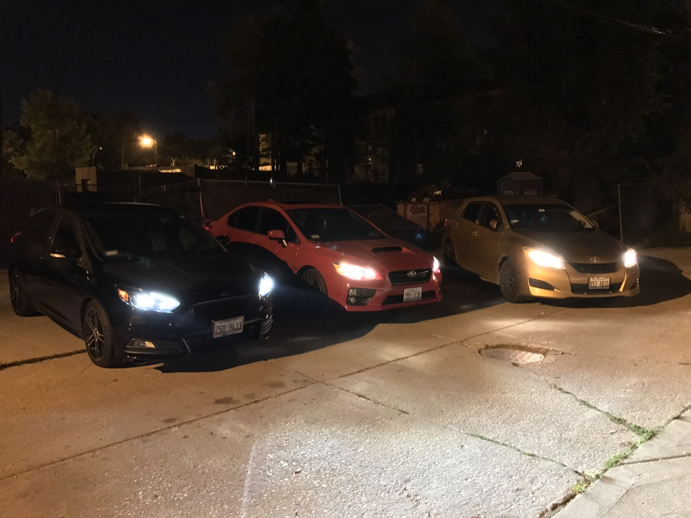
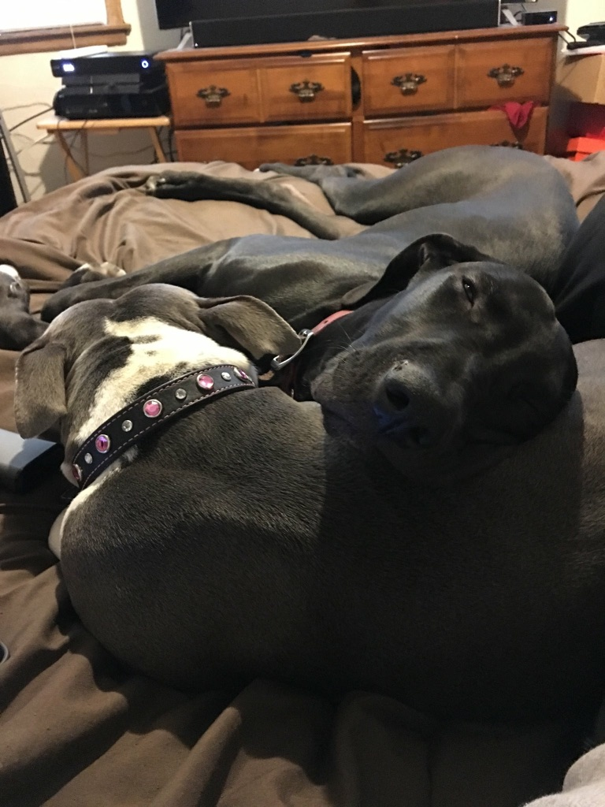
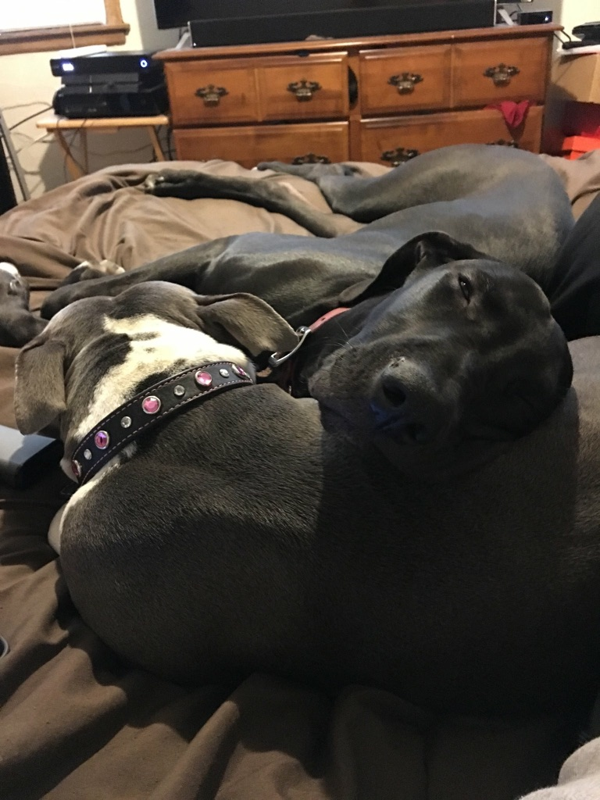

I am a senior at Loyola University. I am finishing a Bachelors degree in both Management and Information Technology. I am aiming to graduate by May 2018. My original background is in Computer Science, but I ended up not liking it much. As I grew older, I decided to start moving away from computer science and into Management. But figured I should complete the IT degree as well.
I am a huge tech-fan. The type that will be up early enough to preorder a new phone (this year included.) I also love cars. Attached is a picture of some of the cars in my family. We have 5 total. It's an expensive hobby. But considering it's something that I use everyday, I think its a worthwhile investment. All of the cars in my family are manual transmission.
I also love my two baby girls - Hazel and Winsey. Hazel is 5 years old, Winsey is 2 years old. Winsey however, is the larger of the two. First picture is when Winsey was 2 weeks old, followed by a recent picture.
 
